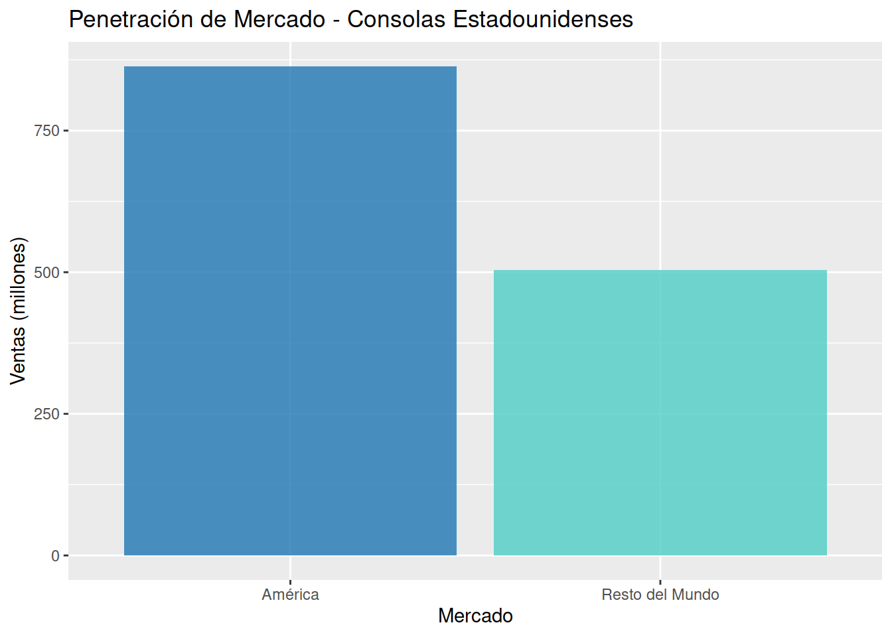

Analisis de Penetración Cruzada de Videojuegos entre América y Japon (1986-2016)
1 Introducción
El mercado de videojuegos ha experimentado un crecimiento exponencial desde sus inicios, convirtiéndose en una de las industrias de entretenimiento más lucrativas a nivel global. Dos de los actores más significativos han sido históricamente Estados Unidos y Japón, naciones que han desarrollado consolas icónicas y cultivado audiencias masivas.
Este estudio busca analizar la dinámica comercial entre estos dos mercados clave durante el período 1986-2016, específicamente investigando cómo las ventas de videojuegos variaron según el origen de las consolas y las regiones de comercialización. El análisis se centra en los impacto de ventas cruzadas entre estas regiones.
2 Materiales y métodos
2.1 Fuente de datos
Para este análisis se utilizó el dataset “Video Game Sales”, que contiene información histórica sobre ventas de videojuegos desde 1980 hasta 2016, con cobertura comprehensiva del período de interés.
2.2 Variables utilizadas
Del dataset original se emplearon las siguientes variables:
- Nombre del juego (Name): Identificador del título
- Plataforma (Platform): Consola de destino
- Año de lanzamiento (Year): Período 1986-2016
- Género (Genre): Categorización del juego
- Publicador (Publisher): Empresa distribuidora
- Ventas regionales:
NA_Sales(América del Norte),JP_Sales(Japón)
- Ventas globales (Global_Sales): Total mundial
2.3 Criterios de selección
Se aplicaron los siguientes filtros:
- Período temporal: 1986-2016
- Clasificación de consolas por origen:
- Consolas americanas: Xbox, Xbox 360, Xbox One
- Consolas japonesas: Nintendo (NES, SNES, N64, GameCube, Wii), Sony (PlayStation, PS2, PS3, PS4), Sega (Genesis, Saturn, DreamCast)
- Consolas americanas: Xbox, Xbox 360, Xbox One
- Exclusión de plataformas PC y móviles para focalizar en el mercado de consolas
3 Procesamiento de datos
3.1 Limpieza de datos
- Manejo de valores fuera de rango:
- Eliminación de registros con año fuera de rango
- Eliminación de registros con año fuera de rango
- Clasificación de plataformas:
- Asignación sistemática de cada plataforma a su país de origen
- Validación con fuentes históricas de la industria
- Asignación sistemática de cada plataforma a su país de origen
- Exclusion de datos fuera del estudio:
- Filtrado de plataformas no relevantes (PC, móviles)
- Filtrado de plataformas no relevantes (PC, móviles)
3.2 Enfoque analítico
El análisis se centrará en:
- Comparar volúmenes de ventas entre regiones (NA vs JP)
- Analizar diferencias en preferencias de género por región
- Evaluar el desempeño comercial cruzado (juegos en consolas americanas en Japón vs juegos en consolas japonesas en América)
- Identificar tendencias temporales en la penetración comercial entre mercados
4 Análisis de datos
4.1 Desempeño de consolas Estadounidenses
4.1.1 Evolución temporal de ventas
Analizando el gráfico de la evolución temporal de ventas para consolas Estadounidenses, se observa una trayectoria comercial caracterizada por un inicio tardío, con ventas insignificantes durante la década de 1990, seguido de un crecimiento explosivo a partir de 2001 —coincidiendo con el lanzamiento de la primera Xbox— que culmina en un pico máximo alrededor de 2006, para luego entrar en una fase de declive pronunciado y continuo hasta el final del período de estudio en 2016, reflejando así un ciclo de vida de mercado concentrado principalmente en la primera década del siglo XXI.
4.1.2 Distribución de géneros desarrollados
Analizando la distribución de géneros desarrollados para consolas Estadounidenses, se observa una marcada concentración en tres categorías principales: Action, Sports y Shooter, que dominan significativamente el catálogo disponible, seguidos por géneros secundarios como Racing y Misc, mientras que categorías como Strategy, Puzzle y Simulation presentan una presencia marginal,
4.1.3 Generos más vendidos en consolas Estadounidenses
Analizando la evolución de ventas de los géneros más exitosos en consolas Estadounidenses, se observa que el género Shooter experimenta un crecimiento explosivo a partir de 2001, convirtiéndose en la categoría dominante y alcanzando su pico máximo alrededor de 2010, mientras que Action mantiene un desempeño constante como segunda categoría en importancia, y géneros como Sports, Racing y Misc presentan volúmenes de ventas significativamente menores a lo largo de todo el período.
4.1.4 Penetración de mercado: América vs. Resto del Mundo

Analizando la penetración de mercado de las consolas Estadounidenses, se observa una marcada predominancia de las ventas en América, que superan significativamente a las registradas en el Resto del Mundo, lo que indica que el éxito comercial de estas plataformas se concentró principalmente en su mercado doméstico durante el período de estudio.
4.2 Desempeño de Consolas Japonesas
4.2.1 Evolución temporal de ventas
Analizando el gráfico de la evolución temporal de ventas para consolas Japonesas, se observa una trayectoria comercial con un crecimiento constante desde 1986 que alcanza su máximo histórico alrededor de 2005-2006, seguido de una fase de declive progresivo hasta el final del período estudiado en 2016, mostrando un ciclo de vida extenso que abarca tres décadas completas de presencia en el mercado.
4.2.2 Distribución de géneros desarrollados
Analizando la distribución de géneros desarrollados para consolas Japonesas, se identifica una predominancia absoluta del género Action en el catálogo, seguido a considerable distancia por Role-Playing y Sports, mientras que géneros como Platform, Shooter y Fighting mantienen una presencia media, y categorías como Simulation, Puzzle y Strategy representan una proporción minoritaria dentro de la oferta total de juegos.
4.2.3 Generos más vendidos en consolas Japonesas
Analizando la evolución de ventas de los géneros más exitosos en consolas japonesas, se observa que el género Action mantiene un dominio constante a lo largo de todo el período, mostrando un notable crecimiento hasta alcanzar su pico alrededor de 2005-2006, mientras que Role-Playing y Platform emergen como categorías secundarias significativas, y géneros como Sports y Misc presentan volúmenes de ventas considerablemente menores en comparación.
4.2.4 Penetración de percado: Asia vs. Resto del Mundo

Analizando la penetración de mercado de las consolas japonesas, se evidencia una distribución comercial radicalmente opuesta, donde las ventas en el Resto del Mundo superan abrumadoramente a las registradas en el mercado doméstico Asiatico, reflejando el éxito global masivo y la amplia internacionalización alcanzada por estas plataformas durante el período analizado.
4.3 Estados Unidos vs Japón: Análisis de ventas cruzadas
4.3.1 Ventas De Juegos de Consolas Estadounidenses en Asia
Analizando las ventas de juegos para consolas Estadounidenses en el mercado Asiatico, se observa una presencia extremadamente limitada durante todo el período de estudio, con volúmenes de ventas marginales que se mantienen cercanos a cero desde 1986 hasta 2016, lo que demuestra la nula penetración comercial de estas plataformas en el territorio.
4.3.2 Ventas de juegos de consolas Japonesas en America
Analizando las ventas de juegos para consolas Japonesas en el mercado Americano, se identifica un crecimiento sostenido y masivo desde 1986, con un pronunciado ascenso que culmina en un pico máximo alrededor de 2006, seguido de una fase de contracción progresiva hasta 2016, evidenciando una penetración comercial profundamente exitosa y una influencia dominante en el mercado americano durante tres décadas.
4.3.3 Análisis de penetración comercial cruzada: consolas Japonesas en America y consolas Estadounidenses en Asia
Analizando de manera comparativa las ventas cruzadas entre ambos mercados, se constata una asimetría absoluta en la penetración comercial: mientras las consolas japonesas en America registraron volúmenes de ventas masivos con un ciclo de crecimiento, auge y declive bien definido, las consolas Estadounidenses en Asia mostraron una presencia irrelevante durante todo el período, evidenciando que el flujo comercial de videojuegos fue predominantemente unidireccional, de Japón hacia América.
4.3.4 Ventas de juegos de consolas Estadounidenses y Japonesas en Europa
Analizando las ventas en el mercado europeo, se observa que las consolas Japonesas dominaron ampliamente durante todo el período, mostrando un ciclo comercial robusto con un crecimiento sostenido hasta alcanzar su pico alrededor de 2006, mientras que las consolas Estadounidenses mantuvieron una presencia marginal con volúmenes de ventas significativamente inferiores, reflejando que Europa constituyó un mercado tradicionalmente favorable para los productos de origen Japonés.
5 Conclusion
El análisis realizado confirma la posición pionera y dominante de Japón en la industria global de los videojuegos durante el período 1986-2016. Desde sus inicios, el mercado Japonés demostró una clara orientación hacia la internacionalización, con un catálogo de géneros que, curiosamente, no presenta diferencias significativas con el Estadounidense en cuanto a preferencias básicas —ambos mercados comparten al Accion como género líder— pero que logró una penetración masiva y sostenida en mercados clave como América y Europa. Este éxito global se refleja no solo en el volumen de ventas, sino en la capacidad de sus consolas para mantenerse relevantes durante tres décadas, consolidando un ecosistema dirigido al consumidor global.
Por su parte, el mercado Estadounidense, con su entrada tardía a la industria de consolas y un número significativamente menor de plataformas desarrolladas, parecería haber adoptado un enfoque regional u occidental como estrategia principal. Este enfoque se refleja en un catálogo especializado que, si bien comparte géneros predominantes con Japón como Action, mostró un desarrollo particularmente intensivo en Shooter, género que resonó fuertemente en los mercados norteamericano y europeo occidental pero tuvo una aceptación limitada en Asia.
El caso de Europa resulta particularmente ilustrativo de este fenómeno, donde si bien las consolas Japonesas mantuvieron su dominio, las consolas americanas lograron una penetración significativamente mayor que en territorio japonés, lo que sugiere cierta sintonía cultural con el mercado occidental. Esta asimetría refleja no solo diferencias en estrategia comercial, sino también en cultura de desarrollo, legado histórico y momento de entrada al mercado. Mientras Japón construyó un modelo genuinamente global a lo largo de décadas, Estados Unidos —con menos consolas y un inicio tardío— parecería haber optado por una estrategia focalizada en mercados occidentales, lo que permitió a las compañías Japonesas mantener su influencia y liderazgo a escala global durante la mayor parte de las tres décadas analizadas, demostrando que el éxito internacional no radica tanto en la elección de géneros sino en la capacidad de adaptación, tradición industrial y comprensión de las dinámicas culturales particulares de cada mercado.